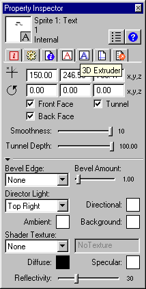
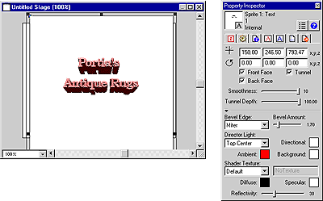

What's New in Director 8.5 > Using 3D Text > Modifying 3D text
What's New in Director 8.5 > Using 3D Text > Modifying 3D text |
Modifying 3D text
Once your 2D text has been changed to 3D, you can modify it.
To modify the 3D text:
1 |
Click the 3D Extruder tab in the Property Inspector.
 |
2 |
Set the camera position and rotation. |
As with the standard 3D Property Inspector pane, you control camera position and rotation with the values you enter in the fields at the top of the pane. The default camera position represents a vantage point looking up through the middle of the scene. |
|
You may prefer to define these settings using the Shockwave 3D window instead of the Property Inspector. |
|
3 |
Select from among the Front Face, Back Face, and Tunnel checkboxes. |
These options control which sides of the text are displayed. |
|
4 |
Set the smoothness. |
This determines the number of polygons used to construct the text. The more polygons used, the smoother the text will appear. |
|
5 |
Set the tunnel depth. |
This is the length of the tunnel from the front face to the back face. |
|
6 |
Choose a beveled edge type. |
Beveling makes the edges of the 3D letters appear rounded or angled. Choose Round for rounded edges and Miter for angled edges. |
|
7 |
Choose a bevel amount. |
This determines the size of the bevel. |
|
8 |
Set up the lighting. |
You can choose a color and position for the text's default directional light. A directional light is a point source of light and comes from a specific, recognizable direction. You can also choose a color for the ambient and background lights in the 3D world the text occupies. Ambient light is diffuse light illuminating the entire world; background light appears to come from behind the camera. |
|
9 |
Apply a shader and a texture. |
Shaders and shader properties determine the appearance of the surface of the 3D text model. Textures are 2D images drawn on the surface of the text. Using the Property Inspector, you can assign a texture to the text's shader. You can also control the color of the shader's specular highlights and its diffuse or overall color and reflectivity. |
|
As with any model, you can apply a texture that uses a bitmap cast member. You can import a bitmap cast member or create a new one in the Paint window. Be sure to give your bitmap cast member a name if doesn't already have one. To assign this bitmap as the texture, specify it in the Property Inspector: choose Member from the Shader Texture menu, and enter the name of the member you want to use in the field to the right of the menu.
 |
|
3D text that has been modified using the Property Inspector |
|